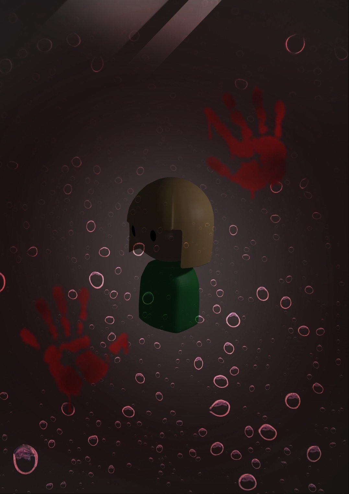

Nia
ボードゲームのルール、ダウンロードでプレイ可能なボードとカードデータを掲載しています
ボード画像リンクはこちら

①表記
イベント(モンスター)マス M
ノーマルマス N
ステータス 攻撃力 攻
体力 生命
金 金
②基本ルール
サイコロを2つ振る
装備マスに止まった場合、買うか買わないか自己判断
ノーマルマスはステータスアップ
イベントマスはカードを引いてモンスターと戦う
特殊ルール
・初期ステータスは、サイコロを2つ振った和でそれぞれの値を設定する
・モンスターから逃げる場合、サイコロを振って奇数が出れば無傷で出た目分逃げる
偶数が出れば攻撃を喰らって出た目分逃げる
・モンスターを倒した場合、他プレイヤーの攻撃に関わらず倒した本人のみレベルアップ
どれか一つステータスを＋5出来る
・モンスターを倒す際、他プレイヤーから装備を借りる事が出来るが、一度借りる毎に金3払う